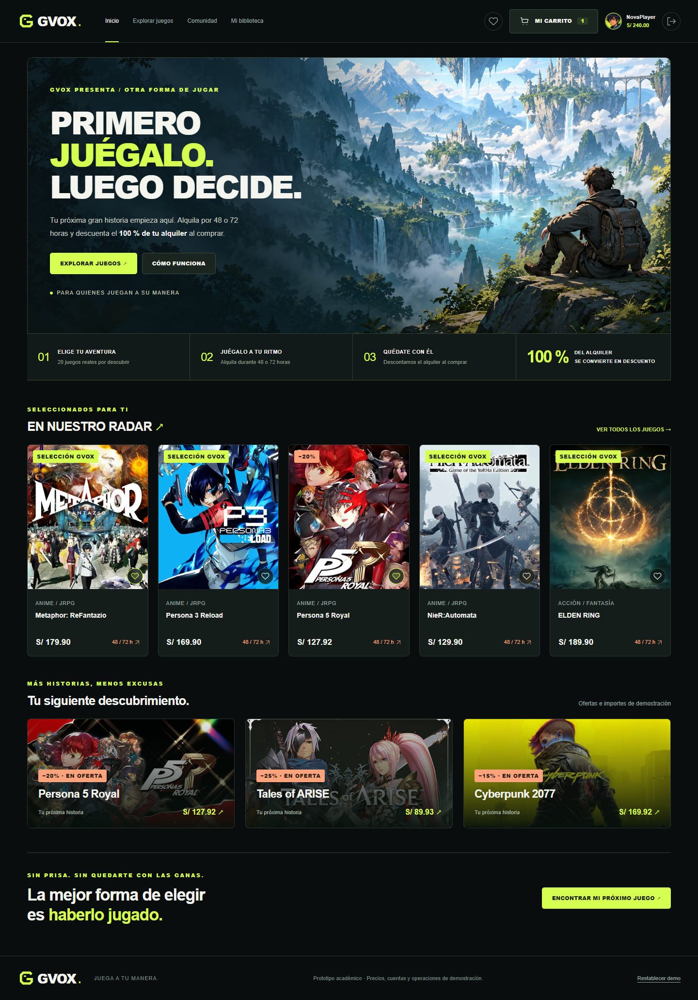
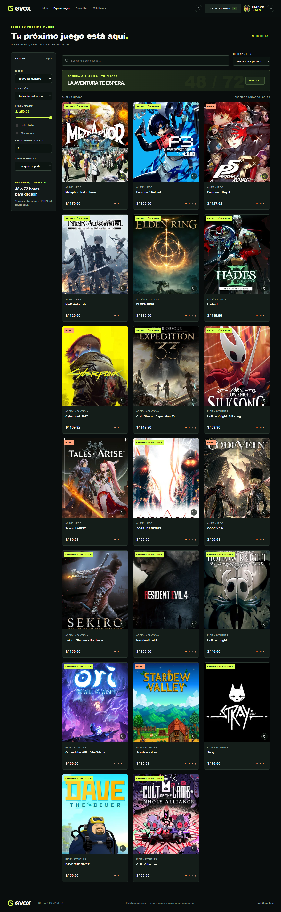
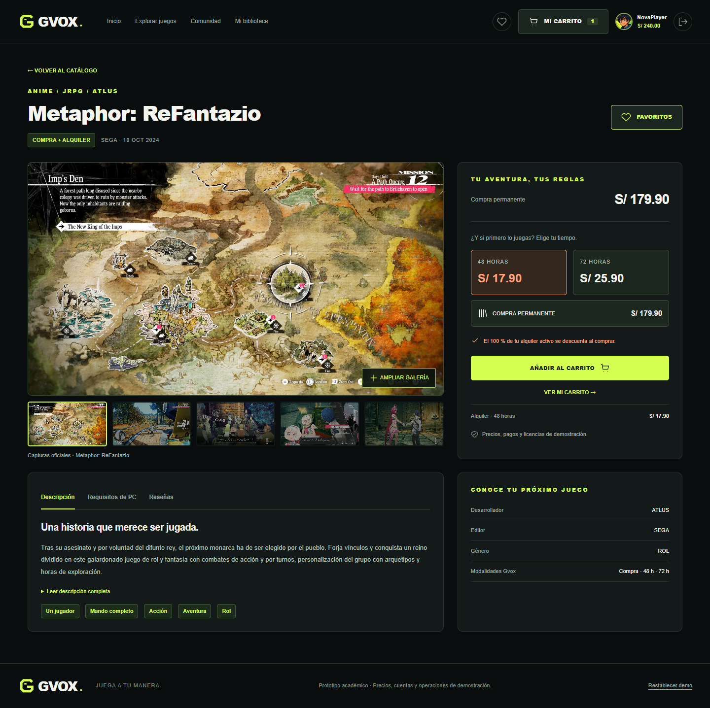
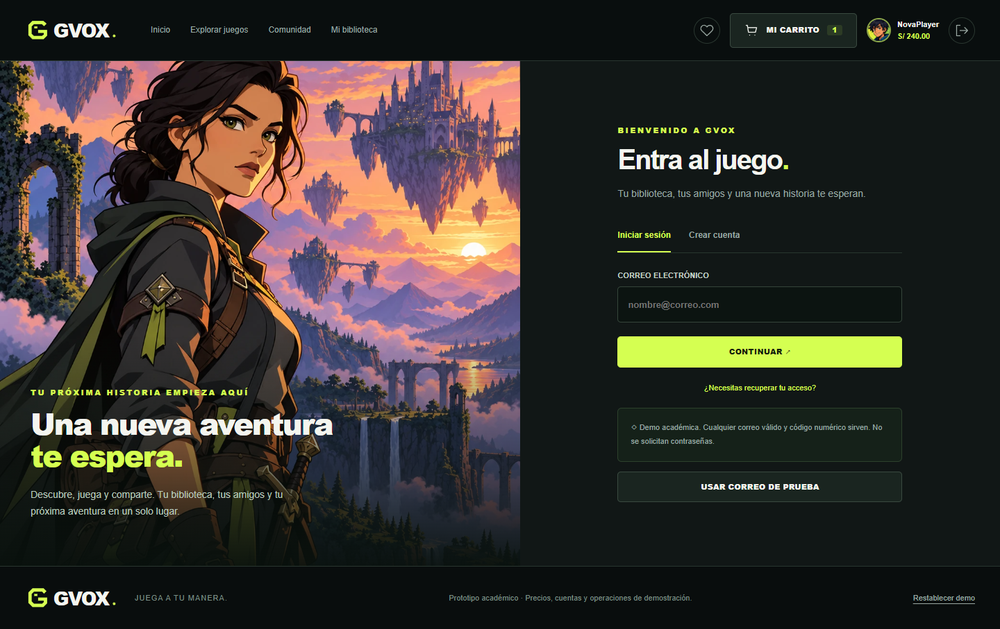
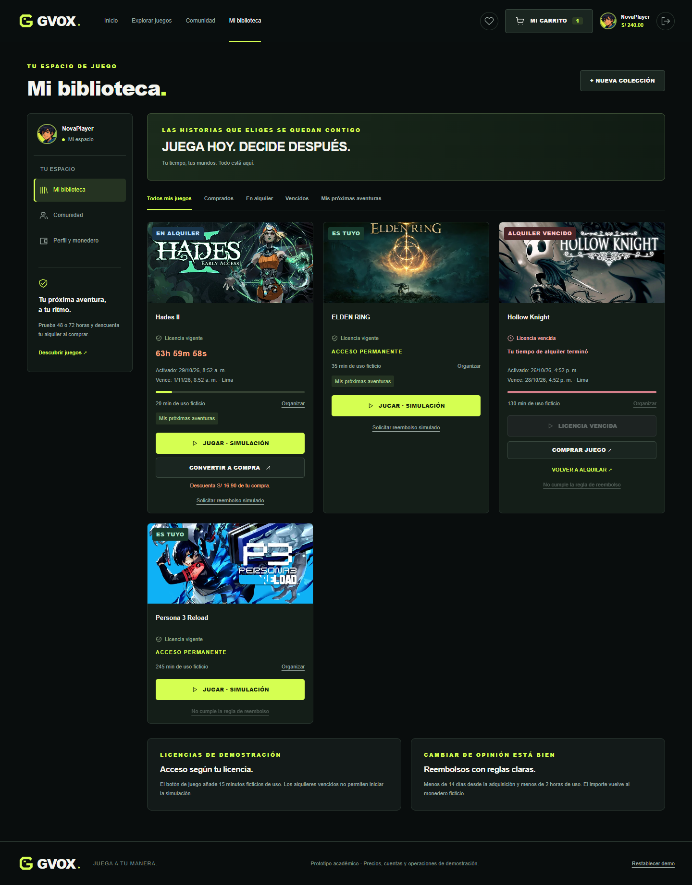
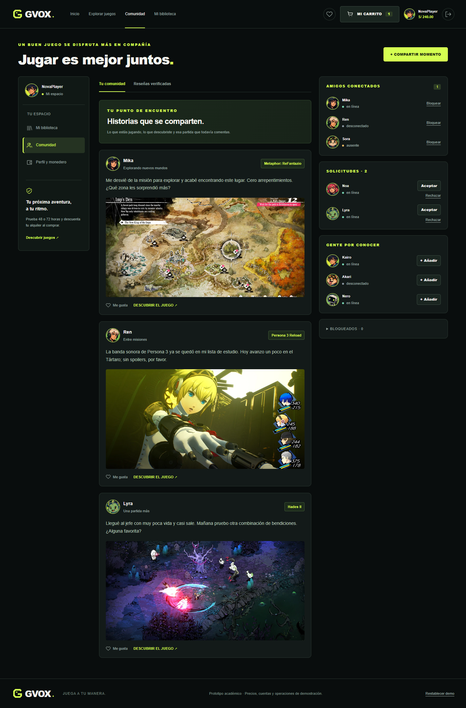
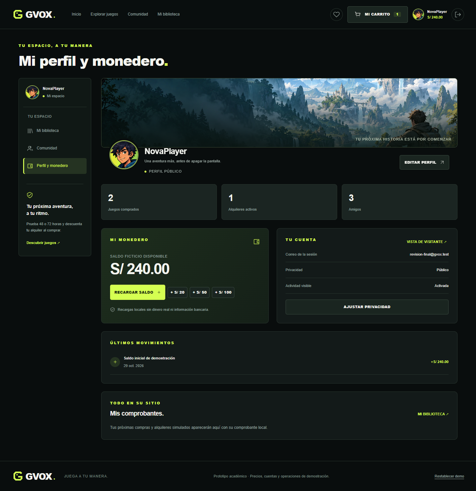
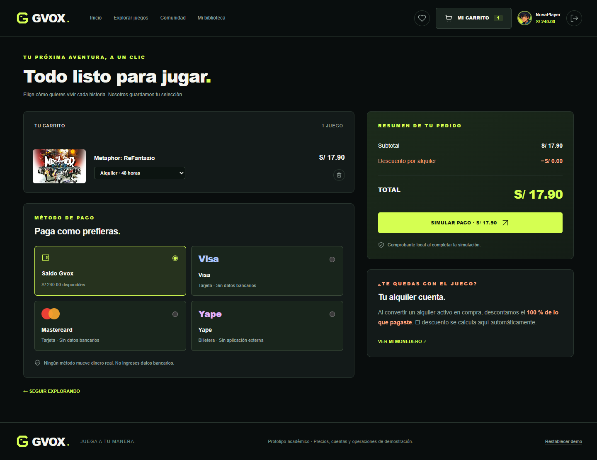
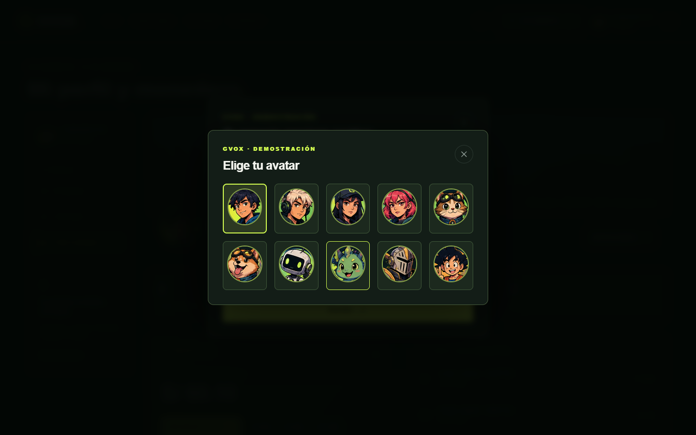

01 Inicio

Entrega final · 29 de octubre de 2026
Capturas reales del navegador a 1440 × 900 y 1920 × 1080. Cada imagen conserva la página completa, incluidos los bloques que requieren desplazamiento.









Las ocho pantallas se comprobaron a 1023 y 390 px: no muestran elementos visibles.